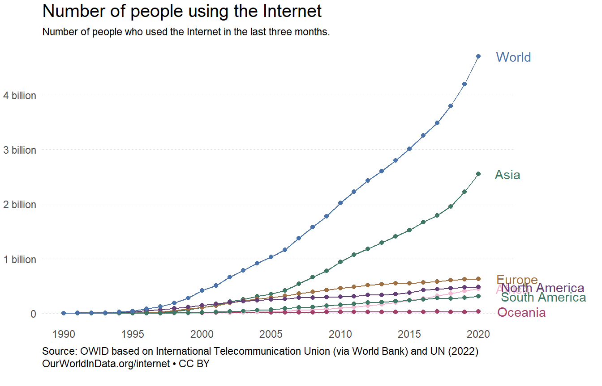

Review the Our World in Data webpage and find a graphic that interests you. Using the data from their website, spend a couple of hours recreating their graphic as closely as you can in an .qmd file . (Make sure you keep the link or can navigate back to the original chart on their website). Be sure to include a link to or a snapshop of the graphic you are trying to recreate in your .qmd file
Load Packages
Step1
Recreate this graph as closely as you can. This will/should take the bulk of your time
Entity Code Year users
1 Africa 1990 0
2 Africa 1991 5434
3 Africa 1992 16232
4 Africa 1993 48970
5 Africa 1994 112387
Graph

Source Code
---title: "Choose your own OWD"author: "Gabriel Guerrero"date: "`r format(Sys.time(), '%B %d, %Y')`"execute: keep-md: true warning: falseformat: html: code-fold: true code-tools: true---## BackgroundReview the Our World in Data webpage and find a graphic that interests you. Using the data from their website, spend a couple of hours recreating their graphic as closely as you can in an .qmd file . (Make sure you keep the link or can navigate back to the original chart on their website). Be sure to include a link to or a snapshop of the graphic you are trying to recreate in your .qmd file## Load Packages```{r}#| label: load_packages#| echo: false# Use this R-Chunk to load the libraries you will use in this file.library(tidyverse)library(readr)library(ggtext)library(grid)```## Step1Recreate this graph as closely as you can. This will/should take the bulk of your timeGraph: https://ourworldindata.org/grapher/number-of-internet-users```{r}#| label: loaddf <-read.csv("number-of-internet-users.csv", check.names=TRUE)df1<- df%>%rename(users = Number.of.Internet.users)%>%fill(users, .direction ="downup")%>%filter(Entity=="World"| Entity=="Asia"| Entity=="Europe"| Entity=="North America"| Entity=="Africa"| Entity=="South America"| Entity=="Oceania")head(df1,5)```## Graph```{r}#| label: graph#| echo: false#| #| fig-width: 10#| fig-height: 4.5p<-ggplot(data=df1)+geom_line(aes(x=Year, y=users, group=Entity, color=Entity ))+geom_point(aes(x=Year, y=users, group=Entity, color=Entity))+scale_color_manual(values =c("#f2b8d3","#3f7965", "#9e7043","#643e77","#a34069","#3f7965","#4b73aa"))+theme_light()+scale_y_continuous(breaks =seq(0, 4.55E9, by=1E9), labels =c("0","1 billion","2 billion", "3 billion", "4 billion"))+scale_x_continuous(breaks =seq(1990,2020, by=5), labels =c("1990","1995", "2000", "2005", "2010","2015","2020"))+#scale_fill_discrete(limits = c("World", "Asia", "Europe","North America","Africa","South America","Oceania"))+theme(panel.grid =element_line(color ="#e2e2e2",size =0.5,linetype ="dashed"),panel.grid.minor =element_blank(),panel.grid.major.x =element_blank(),legend.title =element_blank(),axis.line.y =element_blank(),axis.ticks =element_blank(),panel.border =element_blank(), )+geom_text(data =filter(df1, Year ==max(Year)),aes(x=Year, y=users,label = Entity, color=Entity),hjust =-.1, nudge_x =1)+coord_cartesian(clip ='off') +theme(legend.position ='none',plot.margin =margin(0.1, 2.6, 0.5, 0.1, "cm")) p+labs(title="Number of people using the Internet",subtitle ="Number of people who used the Internet in the last three months.",caption ="Source: OWID based on International Telecommunication Union (via World Bank) and UN (2022)OurWorldInData.org/internet • CC BY")+theme(axis.text.x =element_text(margin =margin(t =0, r =0, b =0, l =0),lineheight =-1),plot.caption =element_text(lineheight =1, hjust =0),plot.title =element_text( hjust=0, size=15, lineheight =4),plot.subtitle =element_text(hjust=0, size=8.5, lineheight =1.2),axis.title =element_blank(),)```